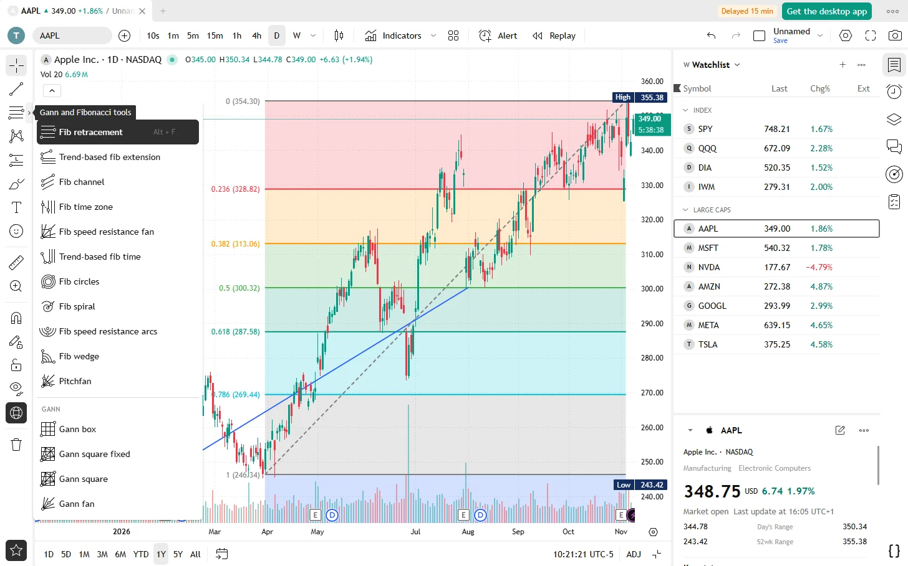

86 drawing tools for your charts.
Trend lines, channels, pitchforks, Fibonacci, Gann, chart patterns, Elliott waves, long and short positions, text and shapes. With magnet, templates and alerts.

Mark up a chart the way you read it
Pick a tool from the toolbar on the left, or with a shortcut: Alt + T for a trend line, Alt + F for a Fibonacci retracement.
Trend tools
Trend lines, rays, horizontal and vertical lines, parallel and regression channels, and pitchforks.
Fibonacci and Gann
Retracement, extension, channel, time zones, fans, circles, spiral, arcs and wedge. Gann box, square and fan.
Patterns
Chart patterns such as head and shoulders, triangles and ABCD, Elliott wave counts and cycles.
Forecasting and measuring
Long and short positions with risk and reward, forecasts, volume-based tools, and price and date ranges.
Shapes and text
Brushes, arrows, rectangles, circles and other shapes, text, notes, callouts, icons, emoji and stickers.
Work faster
Magnet to snap to prices, keep drawing, lock and hide, a favourites bar you can park where you like, and templates for your styles.
Across charts
Sync drawings across the charts of a layout, and find every drawing in the object tree.
Alerts on drawings
Get an alert when the price crosses a trend line, a channel or another drawing.
Questions
Are the drawing tools free?
Yes, all of them, with no limit on the number of drawings.
Are my drawings saved?
Yes, with your layout, and every change is an undo step.
Can I use these tools in my own app?
Yes. They come from the open-source lightweight-charts-drawing library, on npm.
Everything else in the app
Try it. It takes a minute.
Free for Windows, macOS and Linux. Or open the demo in your browser.